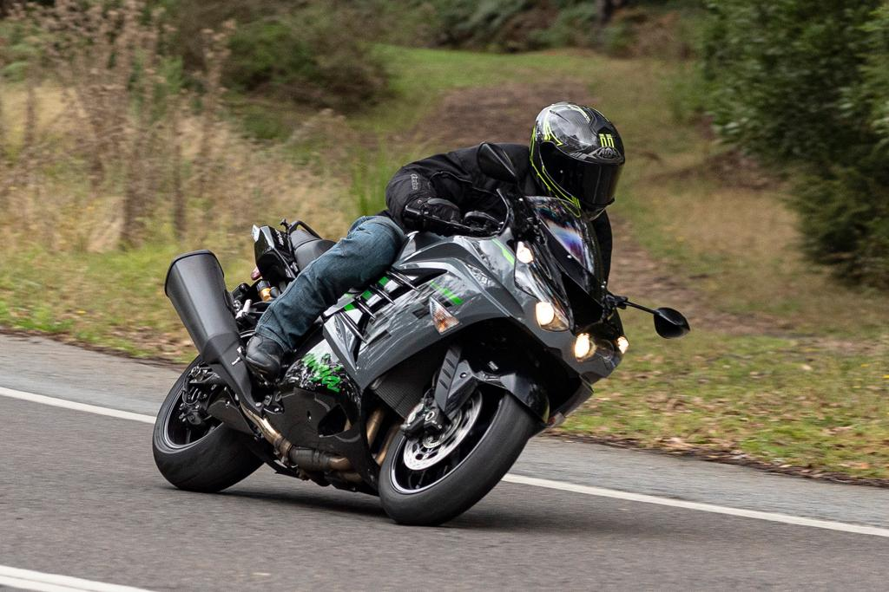

Globe's top 10 fastest bikes ever made

To own or ride a super-fast motorcycle may be one of your dreams. Feel the rise of your adrenaline when you’re at high speed on a motorcycle.
Riding a superbike becomes more thrilling and adventurous than cars. They scream of freedom from the daily drone, giving you a means of kickstarting your boring commute.
10. Aprilia RSV 1000 R
Top speed: 175mph
The Aprilia RSV 1000 R is a high-performance motorcycle that is known for its speed and agility. It is powered by a 998 cc V-twin engine that produces 143 horsepower and 79 lb-ft of torque, allowing it to reach a top speed of around 175 mph. The RSV 1000 R is also equipped with high-end components such as Brembo brakes and fully adjustable suspension, making it a favorite among sportbike enthusiasts.
9. Yamaha YZF-R1

Top speed: 182mph
The Yamaha YZF-R1 is a high-performance sport bike known for its speed and agility. It is a popular choice among riders who demand the best in performance and handling. The top speed of the Yamaha YZF-R1 is approximately 182 mph (293 km/h) for the latest model year.
This impressive top speed is made possible by the R1's powerful 998 cc inline-four engine that produces 200 horsepower and 83 lb-ft of torque. The bike's aerodynamic design and advanced electronics, including traction control and quick-shifter, make it a favorite among sportbike enthusiasts.
8. MV Agusta F4 1000R
Top speed: 186 mph
The MV Agusta F4 1000R is a high-performance sport bike that is known for its sleek design and impressive speed. The top speed of the MV Agusta F4 1000R is approximately 186 mph (299 km/h), making it one of the fastest motorcycles in its class.
The bike is powered by a 998cc liquid-cooled, four-stroke, 16-valve engine that produces 174 horsepower and 85 lb-ft of torque. This powerful engine, combined with the F4 1000R's lightweight and aerodynamic design, allows it to reach its impressive top speed.
7. Kawasaki Ninja ZX-14R

Top speed: 186 mph
The top speed of the Kawasaki Ninja ZX-14R varies slightly depending on the year and conditions.
According to MotoStatz, the 2023 Kawasaki ZX-14R ABS can reach a top speed of 195 mph after around 35 seconds, and it manages a 0-180 mph time impressively at 18.43 seconds and 0-300 km/h in 23.85 seconds.
The 2015-2020 models top out at around 189 mph with a 9.7 second (or so) quarter-mile time that maxes at 147.04 mph. Meanwhile, a 2019 model can reach a top speed of 186 mph.
6. BMW S1000RR
Top speed: 188 mph
The BMW S1000RR is a high-performance sportbike that can reach a top speed of 188 mph (303 km/h). This impressive speed is made possible by the bike's advanced engineering, aerodynamic design, and powerful engine.
The S1000RR is also known for its precise handling and advanced electronics, which make it a favorite among racers and performance enthusiasts. However, it's important to note that riding at such high speeds can be dangerous and should only be done in controlled environments.
5. Suzuki Hayabusa

Top speed: 188-194 mph
The Suzuki Hayabusa is a high-performance motorcycle that can reach a top speed of 188-194 mph (303-312 km/h) depending on the model year and conditions. The Hayabusa is known for its powerful engine, aerodynamic design, and advanced electronics that help it achieve these impressive speeds.
4. Honda CBR1100XX
Top speed: 194 mph
The Honda CBR1100XX, also known as the Super Blackbird, is a high-performance sport touring motorcycle that can reach a top speed of 194 mph (312 km/h). This impressive speed is made possible by the bike's powerful 1,137cc engine, aerodynamic design, and advanced electronics.
The CBR1100XX is also known for its comfortable riding position and excellent handling, making it a popular choice among long-distance riders.
3. MTT Y2K Turbine Superbike

Top speed: 227 mph
The MTT Y2K Turbine Superbike is a high-performance motorcycle powered by a Rolls-Royce 250-C18 turboshaft engine, which produces 320 horsepower. This powerful engine enables the bike to reach a top speed of 227 mph (365 km/h), making it one of the fastest motorcycles in the world.
The Y2K Turbine Superbike also features a unique design with a carbon fiber fairing and a single-sided swingarm, giving it a futuristic look. However, due to its high cost and limited production, this bike is not widely available to the general public.
2. Ducati Superleggera V4
Top speed: 239 mph
The Superleggera V4 is the most technologically advanced and powerful bike Ducati has ever produced, while also being the most exclusive one yet. Only 500 of these are ever to be produced and each comes with its own certificate of authenticity. Equipped with a 998cc V4 engine, the Superleggera produces the same 234 bhp as its Panigale sibling however it weighs in at just 152 kgs with the racing kit on.
The word Superleggera means super light, a fitting name for this automotive marvel. Interestingly the Superleggera V4 has a lot more carbon fibre under the fairing itself. These include the subframe, the wheels, the mainframe and the swingarm, all carbon fibre. The weight reduction is taken to such an extent that the bolts used on the Superleggera V4 are made of titanium.
1. Kawasaki Ninja H2R
Top speed: 243 mph
The Kawasaki Ninja H2R is a high-performance motorcycle designed for track use only. It is powered by a supercharged 998cc engine that produces 310 horsepower, allowing it to reach a top speed of 206-249 mph (332-400 km/h) depending on the conditions.
The H2R also features a unique aerodynamic design with a carbon fiber fairing and winglets, which help to improve stability and handling at high speeds. However, due to its high cost and limited availability, the Ninja H2R is not a common sight on the roads.